0 a 24h
A calmaria
A luz caiu, o celular está sem sinal e a maioria pensa "daqui a pouco volta". Falham energia, internet, cartão e combustível.
Sua prioridade: agir rápido enquanto todos esperam.
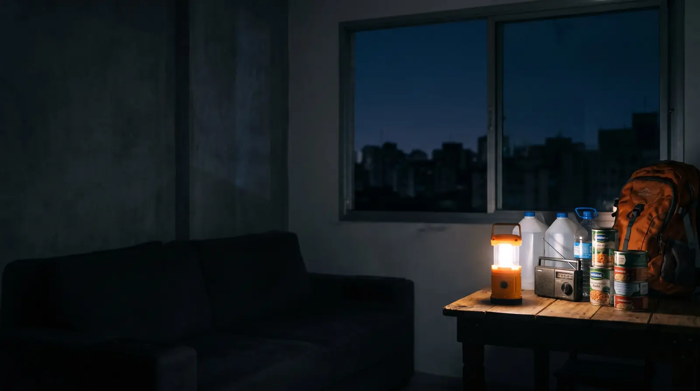
Defesa Civil Nacional · orientação de 6 de novembro de 2026
A Defesa Civil pediu que as famílias brasileiras tenham água, comida, luz e documentos para se manter sozinhas por 3 dias. Nesta página você encontra a lista completa do kit, a conta exata de água para a sua casa e o manual que ensina o que fazer em cada hora de um apagão, enchente ou colapso.
O que está acontecendo
Em poucas semanas, governos de vários países pediram a mesma coisa à população: ter em casa o necessário para atravessar os 3 primeiros dias de uma emergência sem depender de ajuda. Não é previsão de catástrofe. É preparação.
O governo britânico lança uma campanha nacional para que cada casa tenha suprimentos para 3 dias.
A Comissão Europeia orienta a população dos 27 países a manter um kit para as primeiras 72 horas, dentro da sua Estratégia de Preparação.
A Defesa Civil Nacional orienta as famílias brasileiras a montar um kit de emergência para 72 horas, com água, alimentos, remédios, lanterna, rádio, documentos e dinheiro vivo.
Quando um desastre atinge uma cidade inteira, o socorro não chega a todo mundo ao mesmo tempo. Bombeiros, Defesa Civil e equipes de resgate vão primeiro para quem está em risco de vida imediato. Se a sua família está em casa, segura, mas sem água e sem luz, ela vai esperar.
Os primeiros três dias costumam ser os mais críticos: é quando os serviços de socorro estão sob mais pressão. Por isso a Cruz Vermelha, a Comissão Europeia e agora a Defesa Civil usam 72 horas como o mínimo de autonomia de cada casa.
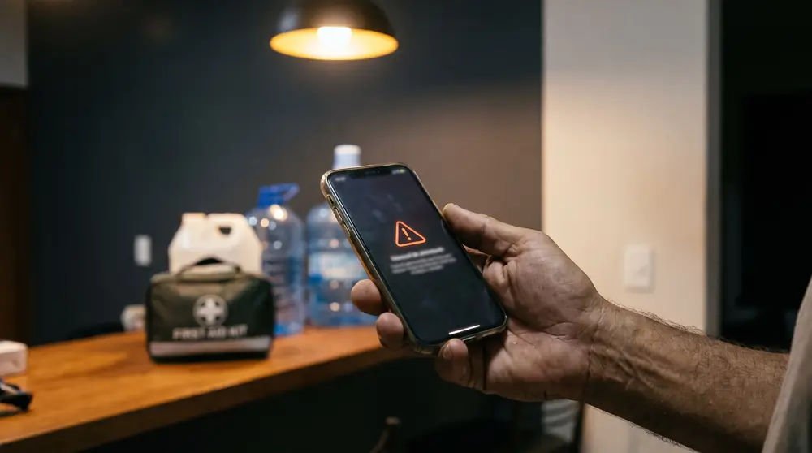
Definição
Kit de emergência de 72 horas é o conjunto de suprimentos que permite a uma família se manter sozinha por 3 dias quando os serviços básicos param: água potável, comida que não precisa de geladeira nem de fogão, iluminação, um meio de receber notícias, remédios, documentos e dinheiro vivo. Ele pode ficar em casa (para quem vai ficar) ou numa mochila pronta (para quem precisa sair às pressas).
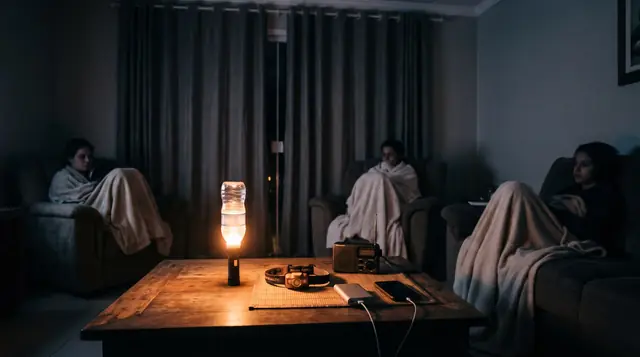
Água, comida e luz para 3 dias, para quando o mais seguro é ficar e esperar.
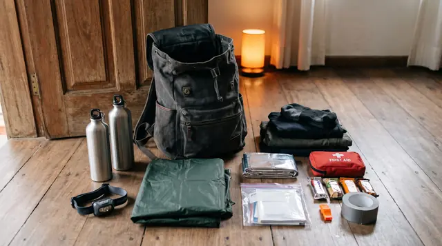
O mínimo para sair a pé em menos de 5 minutos e atravessar 72 horas fora de casa.
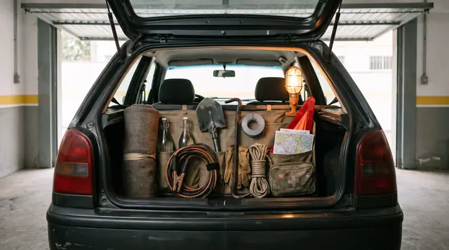
O que te sustenta se a crise te pegar na estrada ou se for preciso sair da cidade.
Checklist gratuita
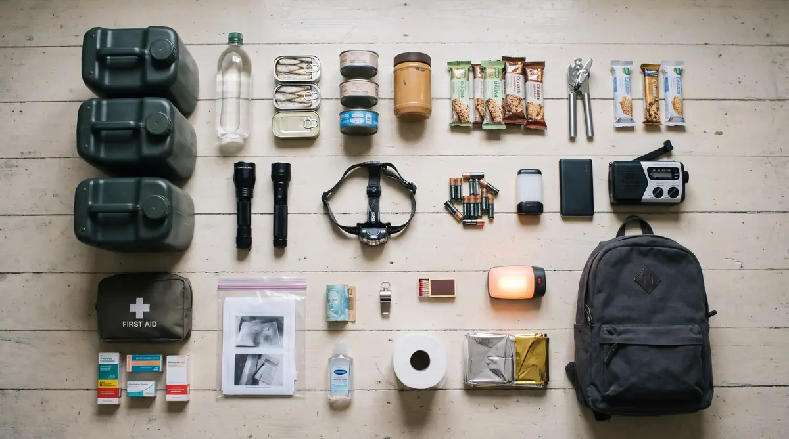
Marque o que você já tem. O que ficar em branco vira a sua lista de compras. A lista fica salva neste aparelho.
0 de 0 itens
Lista baseada nas orientações da Defesa Civil Nacional e no manual 72 Horas. No manual, cada item vem com o porquê, a quantidade certa e o jeito de guardar, e os Checklists das 3 Mochilas trazem mais de 130 itens para imprimir.
Calculadora
A Defesa Civil fala em pelo menos 2 litros por pessoa, por dia, só para beber. Mas numa emergência a água também precisa dar para cozinhar e para a higiene básica. Por isso a referência usada por agências de emergência, e adotada no manual, é de cerca de 4 litros por pessoa, por dia.
Some um pouco mais se tiver bebê, idoso, gestante ou pet, ou se fizer muito calor. E troque a água guardada a cada 6 meses.
só para beber (2 L por pessoa por dia)
para beber, cozinhar e higiene (4 L por pessoa por dia)
São 4 galões de 12 litros. Cabem embaixo da pia.
Ter o kit é metade do caminho
Todo desastre é diferente, mas o comportamento das pessoas se repete. Quem entende o padrão age antes de todo mundo. Quem não entende vira fila.
0 a 24h
A luz caiu, o celular está sem sinal e a maioria pensa "daqui a pouco volta". Falham energia, internet, cartão e combustível.
Sua prioridade: agir rápido enquanto todos esperam.
24 a 48h
A comida da geladeira estraga, a multidão acorda e lota mercados e postos. Falham água da torneira, coleta de lixo e informação.
Sua prioridade: ficar em casa e se organizar.
48 a 72h
A água guardada das famílias acaba, o comércio fecha ou raciona e os serviços ficam sobrecarregados.
Sua prioridade: discrição, segurança e calma.
Resumo do Capítulo 2 do manual. Lá você aprende o que fazer em cada fase, incluindo a decisão mais importante de todas: ficar em casa ou sair.
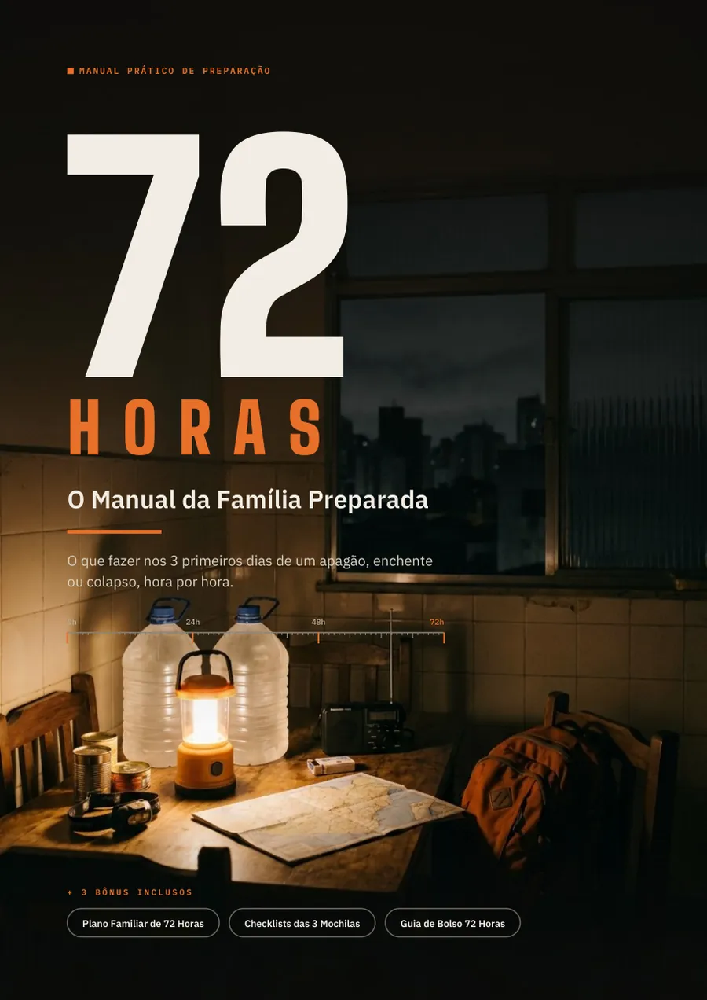
O manual
Um guia prático, ilustrado e direto ao ponto, escrito para famílias comuns. Não é sobre viver com medo nem sobre comprar equipamento caro. É sobre saber o que fazer, na ordem certa, quando todo mundo ao seu redor ainda está tentando entender o que aconteceu.
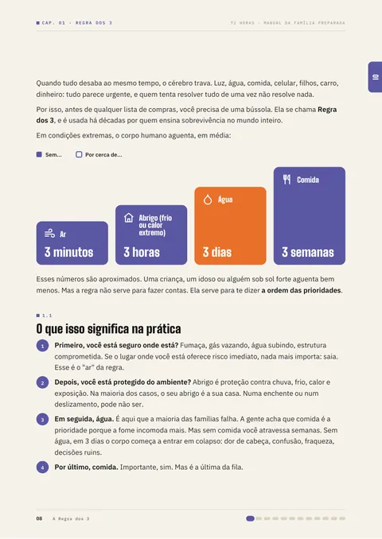
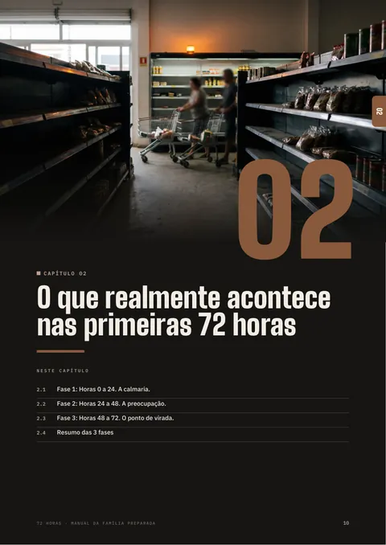
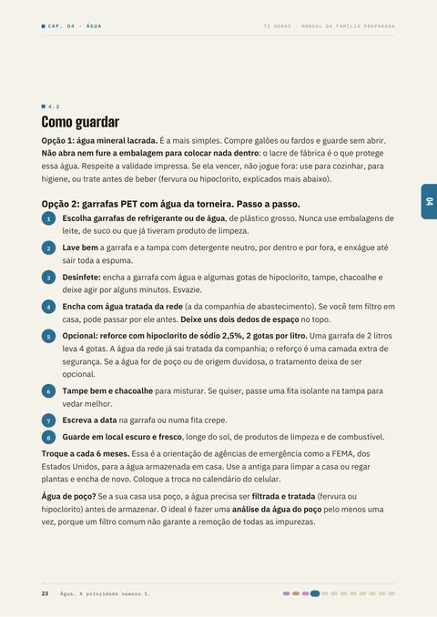
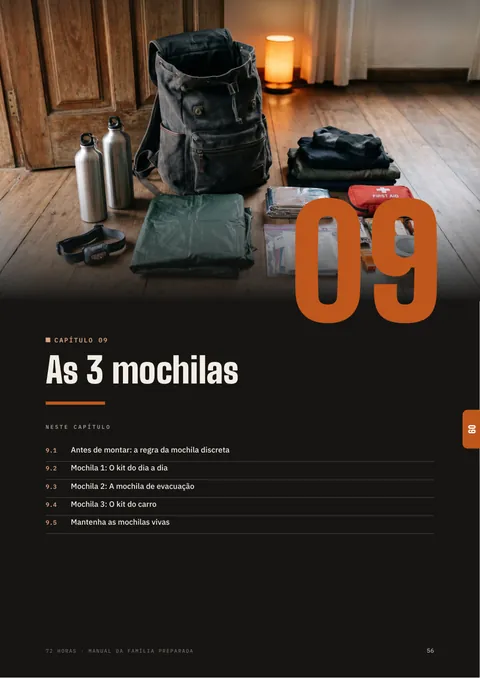
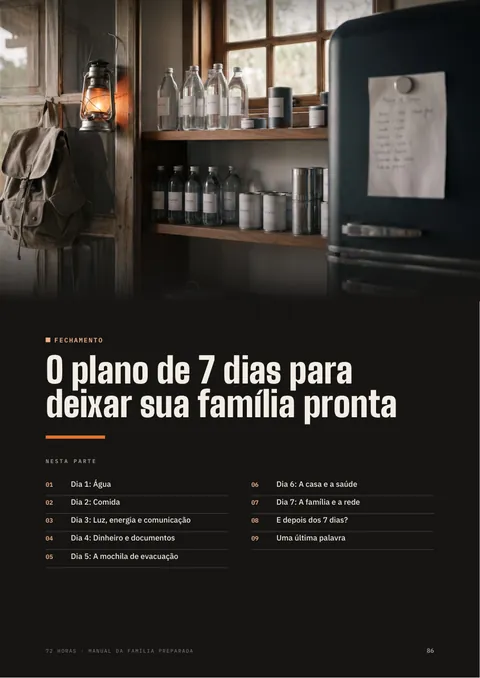
Junto com o manual
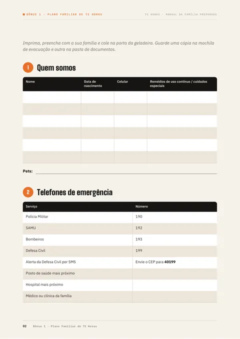
Bônus 1
Formulário em 10 partes para preencher com a família e colar na geladeira: contatos, pontos de encontro, plano de comunicação, onde está cada coisa e quem faz o quê.
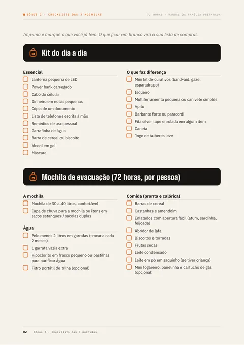
Bônus 2
Kit do dia a dia, mochila de evacuação, kit do carro, kit de primeiros socorros e despensa para 3 dias. Marque o que tem e o resto vira lista de compras.
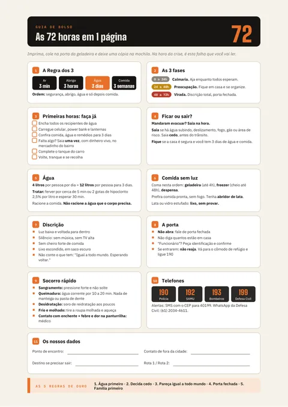
Bônus 3
Tudo o que importa em uma página: as 3 fases, água, comida, porta, socorro rápido e telefones. Para colar na geladeira e levar na mochila.
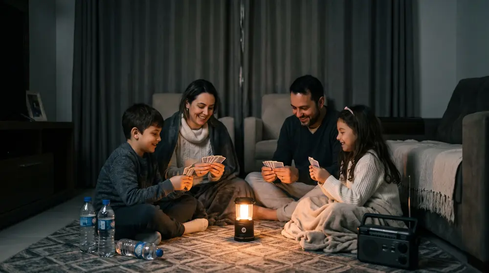
"Preparação não é paranoia. Nossas avós faziam conserva, guardavam vela na gaveta e tinham sempre um pouco a mais na despensa. Elas não tinham medo. Elas tinham juízo."Trecho da Abertura do manual
Oferta de lançamento
de R$ 59,90
por R$ 39,90
no Pix, cartão ou boleto · pagamento único
O preço de lançamento termina em
Perguntas frequentes
É um conjunto de suprimentos para a família se manter sozinha por 3 dias em uma emergência, como apagão, enchente ou tempestade: água, comida que não precisa de geladeira, lanterna, rádio, remédios, documentos e dinheiro vivo. A Defesa Civil Nacional publicou a orientação em 6 de novembro de 2026, com caráter preventivo.
Quando um desastre atinge uma cidade inteira, o socorro não chega a todo mundo ao mesmo tempo: as equipes vão primeiro para quem está em risco de vida imediato. Os primeiros três dias costumam ser os mais críticos, por isso Defesa Civil, Cruz Vermelha e Comissão Europeia usam 72 horas como referência mínima de autonomia.
A Defesa Civil fala em pelo menos 2 litros por pessoa, por dia, só para beber, ou 6 litros por pessoa em 72 horas. Para beber, cozinhar e fazer a higiene básica, a referência usada por agências de emergência é de cerca de 4 litros por pessoa, por dia: 12 litros por pessoa para 3 dias. Uma família de 4 pessoas precisa de 48 litros. Use a calculadora.
Água potável, comida que dura e não precisa de fogo, abridor de lata, lanterna e pilhas, power bank, rádio a pilha, kit de primeiros socorros, remédios de uso contínuo, cópias de documentos, lista de telefones no papel, dinheiro em notas pequenas, itens de higiene, apito e uma muda de roupa. Veja a lista completa.
Não. A orientação é preventiva e não indica que uma catástrofe vá acontecer. Também não é preciso comprar tudo de uma vez: dá para montar o kit aos poucos, comprando um item a mais a cada ida ao mercado.
Assim que o pagamento é confirmado, você recebe por e-mail um link para baixar o manual e os 3 bônus em PDF. No Pix, a confirmação costuma levar poucos minutos. Os arquivos funcionam no celular, no tablet e no computador, e podem ser impressos.
Pix, cartão de crédito ou boleto, em ambiente de pagamento seguro do Asaas.
Sim. Você tem 7 dias para pedir o reembolso integral, sem precisar explicar o motivo, como garante o artigo 49 do Código de Defesa do Consumidor. Basta escrever para sobrevivencia72h@gmail.com ou chamar no WhatsApp.
Sim. Ele parte do que se repete em quase todas as crises (falta de energia, de água, de comunicação e de abastecimento) e tem capítulos específicos sobre ficar ou sair de casa, água, comida, energia, segurança, mochilas de evacuação e primeiros socorros.